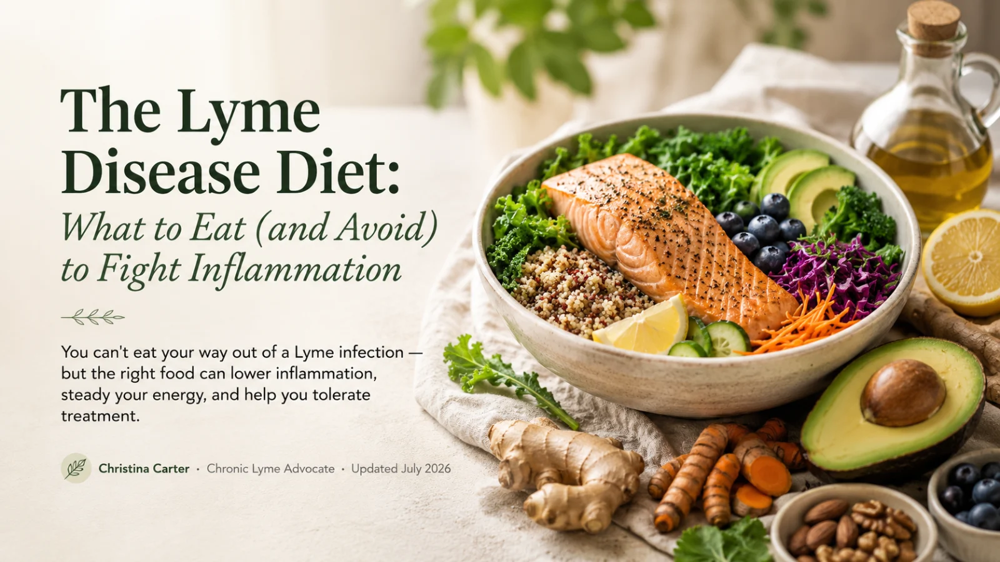
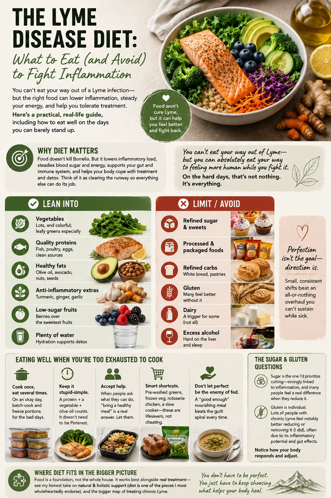

The Lyme Disease Diet: What to Eat (and Avoid) to Fight Inflammation
You can't eat your way out of a Lyme infection — but the right food can lower inflammation, steady your energy, and help you tolerate treatment. Here's a practical, real-life guide, including how to eat well on the days you can barely stand up.

When you have Lyme, food becomes complicated. Everyone has an opinion, half the internet contradicts the other half, and — let's be honest — on the worst days, "cooking a healing meal" feels about as realistic as running a marathon. I've been there, standing in my kitchen too exhausted to make dinner, wondering if any of it even mattered.
Here's what I learned: diet won't cure Lyme, but it absolutely made me feel better, function better, and handle treatment better. So let me give you the practical version — what helps, what to limit, and how to actually pull it off when you're depleted.

Quick answer
What is the best diet for Lyme disease?
There is no single official Lyme diet, but most Lyme-literate practitioners recommend an anti-inflammatory, whole-food approach: plenty of vegetables, quality proteins, healthy fats, and low sugar, while limiting processed foods, refined sugar, and often gluten and, for some people, dairy. The goal is to lower the body's inflammatory load and support energy and the immune system while other treatment does the work of addressing infection. Individual needs vary.
Key Takeaways
- You can’t eat your way out of Lyme — but the right food lowers inflammation and steadies energy.
- Emphasize anti-inflammatory whole foods; limit sugar and, for many, gluten.
- Sugar and gluten are common triggers worth testing by removing.
- Eat well even when you’re too exhausted to cook — simple, low-effort strategies help.
- Diet is a supportive foundation, not a stand-alone treatment.
Watch: Cooking with Lyme Disease
On the days cooking feels impossible, this one is for you — my real-life take on eating well with Lyme.
If the video does not load, watch it on YouTube.
Why diet matters (and what it can't do)
Let's set honest expectations. Food does not kill Borrelia. What a good diet does do is powerful in its own right: it lowers your inflammatory load, steadies blood sugar and energy, supports your gut and immune system, and helps your body cope with the demands of treatment and detox. Think of it as clearing the runway so everything else can do its job.
You can't eat your way out of Lyme — but you can absolutely eat your way to feeling more human while you fight it. On the hard days, that's not nothing. It's everything.
What to eat, what to limit
Most Lyme-literate practitioners land on some version of an anti-inflammatory, whole-food approach. Here's the simple version:
Lean into
- Vegetables — lots, and colorful; leafy greens especially
- Quality proteins — fish, poultry, eggs, clean sources
- Healthy fats — olive oil, avocado, nuts, seeds
- Anti-inflammatory extras — turmeric, ginger, garlic
- Low-sugar fruits — berries over the sweetest fruits
- Plenty of water — hydration supports detox
Limit / avoid
- Refined sugar & sweets — the big one; feeds inflammation
- Processed & packaged foods
- Refined carbs — white bread, pastries
- Gluten — many feel better without it
- Dairy — a trigger for some (not all)
- Excess alcohol — hard on the liver and sleep
Notice I said limit, not "never." Perfection isn't the goal — direction is. Small, consistent shifts beat an all-or-nothing overhaul you can't sustain while sick.
The sugar and gluten questions
Two foods come up constantly. Sugar is the one I'd prioritize cutting — it's strongly linked to inflammation, and many people feel a real difference when they reduce it. Gluten is individual: lots of people with chronic Lyme feel notably better reducing or removing it (I did), often due to its inflammatory potential and gut effects. It's not mandatory for everyone — the honest approach is to notice how your own body responds and adjust.
Eating well when you're too exhausted to cook
This is the part most "Lyme diet" articles skip — and it's the part that actually matters when you're this sick. Real strategies from real bad days:
- Cook once, eat several times. On an okay day, batch-cook and freeze portions for the bad days.
- Keep it stupid-simple. A protein + a vegetable + olive oil counts. It doesn't need to be Pinterest.
- Accept help. When people ask what they can do, "bring a healthy meal" is a real answer. Let them.
- Smart shortcuts. Pre-washed greens, frozen veg, rotisserie chicken, a slow cooker — these are lifesavers, not cheating.
- Don't let perfect be the enemy of fed. A "good enough" nourishing meal beats the guilt spiral every time.
Where diet fits in the bigger picture
Food is a foundation, not the whole house. It works best alongside real treatment — see my honest take on natural & holistic support (diet is one of the pieces I most wholeheartedly endorse), and the bigger map of treating chronic Lyme. If you're wondering which parts of your regimen are actually helping, that's a great thing to sort through together.
Lyme Diet FAQ
There's no single official Lyme diet, but most practitioners recommend an anti-inflammatory, whole-food approach: lots of vegetables, quality proteins, healthy fats, low sugar, while limiting processed foods, refined sugar, and often gluten (and dairy for some). The goal is to lower inflammation and support energy and immunity while treatment addresses the infection. Needs vary.
Commonly limited: refined sugar and sweets, highly processed foods, refined carbs, excess alcohol, and for many people gluten and sometimes dairy. Sugar is especially worth minimizing since it can promote inflammation. Many people also identify individual trigger foods and reduce those.
Diet doesn't kill the bacteria, but it can meaningfully support recovery — reducing inflammation, steadying energy, supporting gut and immune function, and helping you tolerate treatment. Best seen as a powerful foundation alongside medical care, not a stand-alone cure. Many people simply feel better eating well.
Many people with chronic Lyme feel better reducing or eliminating gluten, often due to its inflammatory potential and gut effects. It's not mandatory for everyone — needs are individual — but reduced-gluten is a common, reasonable thing to try. Notice how your own body responds.
References & further reading
- Centers for Disease Control and Prevention (CDC) — Lyme Disease. cdc.gov/lyme
- International Lyme and Associated Diseases Society (ILADS) — evidence-based guidelines and research. ilads.org
- MedlinePlus (U.S. National Library of Medicine, NIH) — Lyme Disease. medlineplus.gov
- Johns Hopkins Lyme Disease Research Center. hopkinslyme.org
Medical disclaimer: This article is for educational purposes only and reflects personal experience. It is not medical or nutritional advice, diagnosis, or treatment, and it does not replace consultation with a qualified healthcare professional or dietitian who knows your individual history. Dietary needs vary, and some people have food sensitivities, allergies, or conditions that require specific guidance. Christina Carter is a patient advocate and educator, not a licensed medical or nutrition professional. Individual results vary. Always consult a qualified professional before making significant dietary changes.